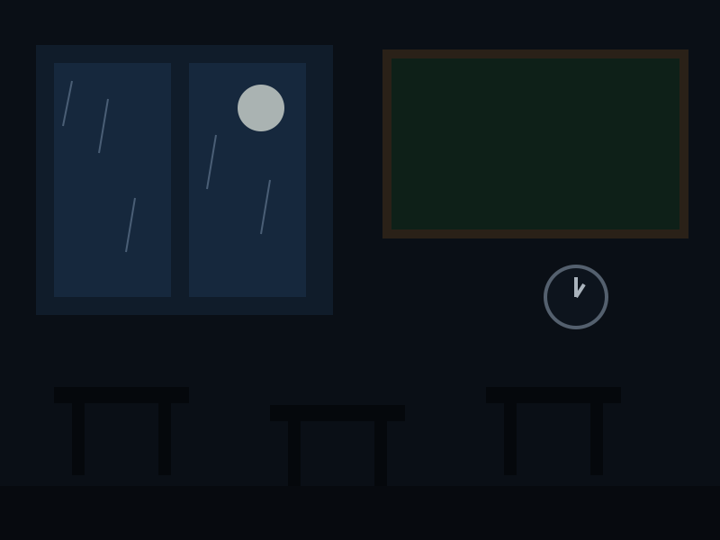
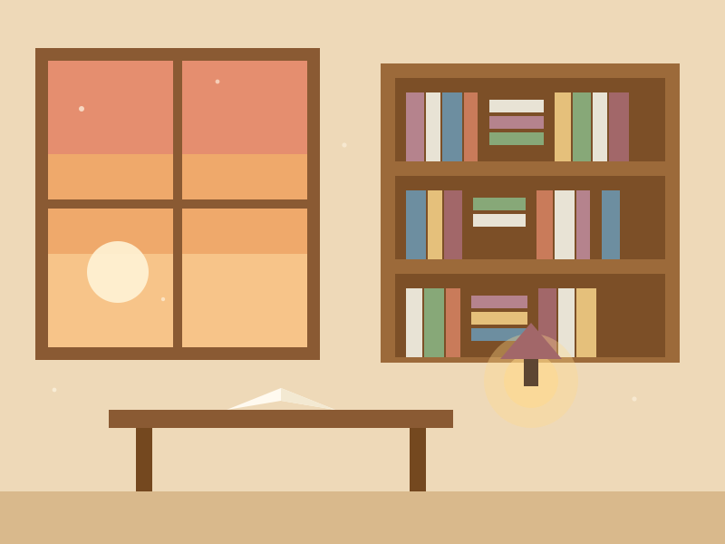
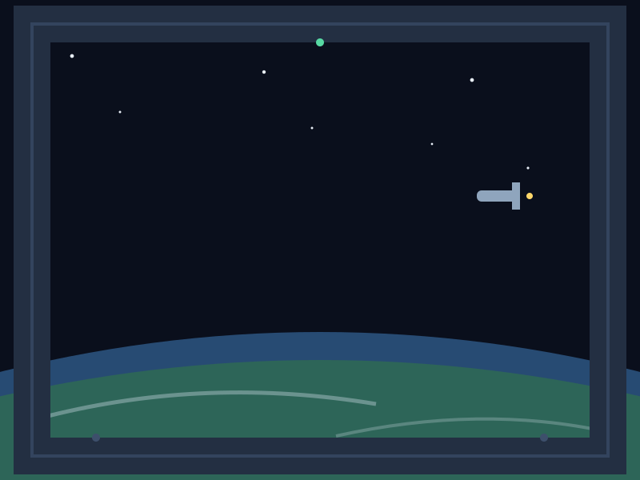
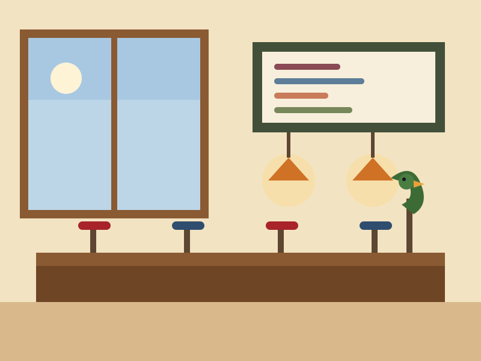

ホラー
午前0時の校舎
真夜中の校舎に一人取り残された。名前を呼ばれても、返事をしてはいけない。
『サウンドノベル』は、スマートフォンで読む短編小説集です。一冊は5〜15分ほど。文章を読み進め、途中で現れる選択肢を選ぶと、物語の行き先と結末が変わります。場面に寄り添う音楽と音が、物語の世界を静かに広げます。たどり着ける結末は、一冊につき3つ。あなたの選択で、結末を探してみてください。
現在、5冊の物語が本棚に並んでいます。

真夜中の校舎に一人取り残された。名前を呼ばれても、返事をしてはいけない。

返却ポストで見つけた、名前のない貸出カード。放課後の図書室で、静かな恋が始まる。
文化祭の朝、優勝杯が消えた。鍵は内側から掛かっていた――密室の謎。

40年前に消えた探査船の信号。通信士と、船に残されたAIの遠くて近い会話。

バイト初日の喫茶店。インコの社長は好き放題。伝説のメニューが復活する？
読むだけじゃない、ささやかな仕掛けを用意しています。
物語ごとに書き下ろした音楽と、場面の音。ホラーの静けさ、恋愛の温かさ、推理の緊張感、SFの浮遊感、コメディの軽快さを、音でも味わえます。
選択肢は一冊に4か所、結末は3つ。大事な場面で何を選ぶかで、たどり着く結末が変わります。読み返して、別の運命を探すこともできます。
読みかけの物語は自動で保存され、次は「つづきから読む」で再開できます。記録のバックアップ（書き出し・読み込み）にも対応しています。
アプリのように、ホーム画面から開けるようになります。